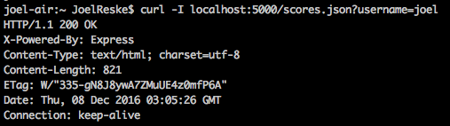

Joel Reske - December 6th, 2016
The purpose of this evaluation is to identify potential security threats to the implementation of the 2048 game score database created by Sarah Hall-Swan. Hopefully, this evalutation will be used to secure this site in the future and prevent the further exploitations of the vulnerabilities described below. All testing has been done with the permission of Sarah Hall-Swan both on a hosted version of her web applicaiton and using source code provided by her.
Firstly, black-box testing was done to see if vulnerabilities could be found using simply a knowledge of the intentions of the API endpoints. This testing was done via direct requests to the server using Postman, simply thinking about possible vulnerabilities and attempting to exploit them. Next I used OWASP ZAP, an open source tool for finding web vulnerabilities. This tool was able to identify some additional reccomendations about headers and XXS protection that would have been harder to addess using simple blind poking. Lastly, I looked through the source code itself to see if there were any additional reccomendations I could make based on the implementation itself.
In total, there is one very severe error in addition to two other errors which are much less severe but still reccomended for fixing. The sever error should be fixed as soon as possible as it allows any attacker to inject potentially malicious code into your database. Then, when any user visits a webpage intended to display this data, the malicious code will be delivered. The other two errors are reccomendations for headers which, while not as obvious routes for attack, are still important to secure.
This is currently a very severe error which allows any malicious code injected to run automatically on any browsert that visits the /scores.json endpoint. This could allow a perpatrator to show adds, perform a phishing attack, or simply break the intended funcitonality of the site. Luckily, this expoit is easily combatted by sanitizing untputs and could be easily secured. This flaw involves two endpoints: "/submit.json" and "/scores.json"
The steps to recreating this vunerability are:
curl -X POST -H "Content-Type: application/x-www-form-urlencoded" -d 'username=joel&score=50&grid=<script>alert('hello')%3B</script>' "http://localhost:5000/submit.json"
The resolution to this is actually already correctly implemented with the username field - simply remove all special characters from input on the /submit.json endpoint before adding it to the database. This will remove risk of html tags or other harmful characters being added.
Unfortunately, the X-Frame-Options header is not included in the HTTP response to protect against 'ClickJacking' attacks. What this mean is that without this header this page can be embedded inside a malicious page in order to fool a client into clicking somewhere they do not mean to - called 'ClickJacking.' It is reccomended that this header be added in order to prevent these types of attacks. This security flaw exist on all endpoints in this app.
Most modern Web browsers support the X-Frame-Options HTTP header. Ensure it's set on all web pages returned by the site.
The X-XSS-Protection HTTP response header allows the web server to enable or disable the web browser's XSS protection mechanism. Without this header there is an increased risk of XSS attacks. This security flaw exist on all endpoints in this app.
Simply put, when each page is loaded the X-XSS-Protection HTTP response header is not sent. This was detected by ZAP, shown here by the header being missing on the responce:
Similarly to with X-Frame-Options, ensure that the web browser's XSS filter is enabled, by setting the X-XSS-Protection HTTP response header to '1'. See this helpful guide for avoiding these types of attacks.
In conclusion, there are currenly some large security flaws in the web app. Luckily, all of these flaws - large and small - have relatively simple fixes which will serve to help sucure this site for the future. I highly reccomend that these be fixed as soon as possible to ensure the integrity of the app and ensure the best experience for your users.